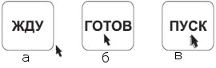
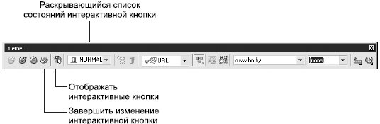
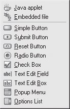
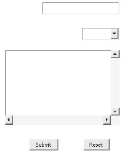
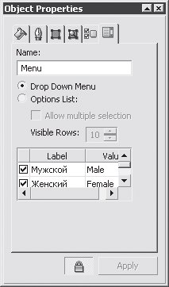
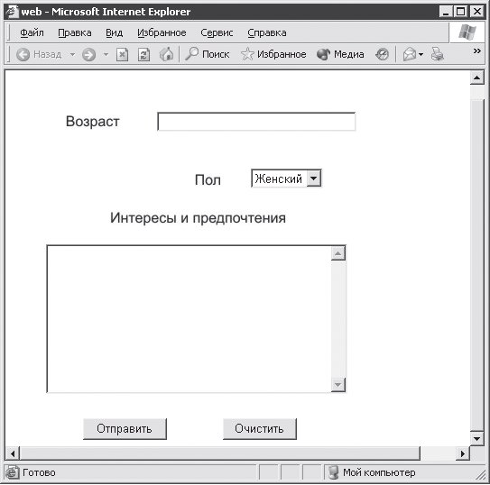
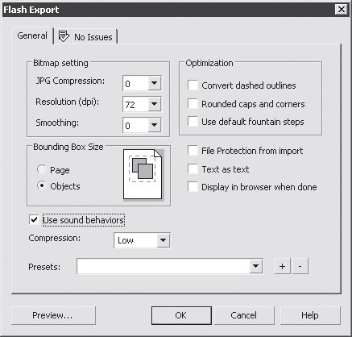
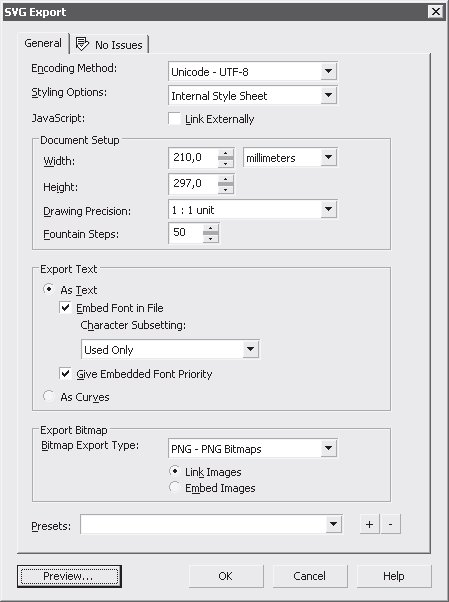
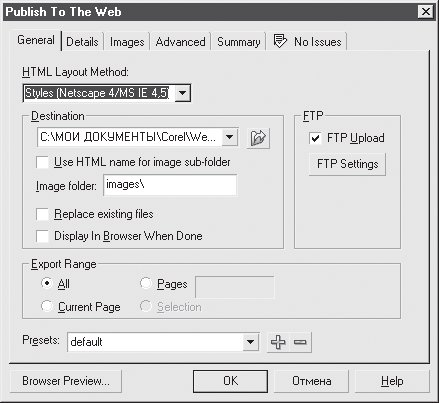
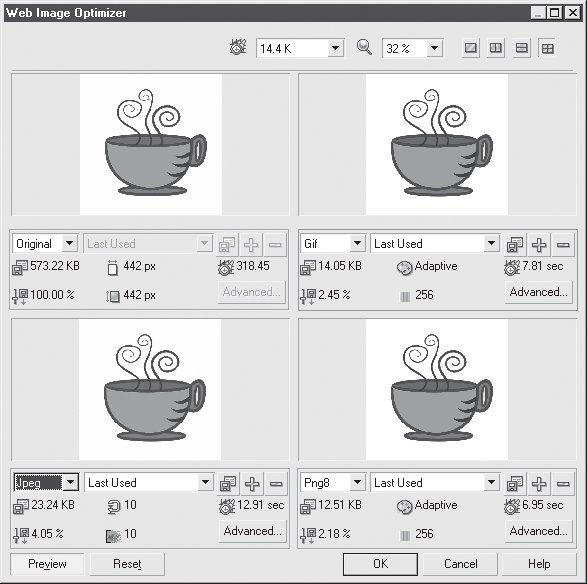

Лекция 14: Подготовка web-графики
14.1. Вставка интернет-объектов
Интерактивная кнопка (Rollover)
Интерактивная кнопка — это элемент web-дизайна, который изменяет свой внешний вид в зависимости от состояния указателя мыши.
Как правило, она реагирует на три события: Normal — указатель находится вне кнопки (рис. 14.1, а), Over — указатель над кнопкой (рис. 14.1, б) и Down — происходит нажатие на кнопку (рис. 14.1, в).
Рис. 14.1. Поведение интерактивной кнопки в зависимости от положения указателя мыши: а — указатель вне кнопки; б — указатель над кнопкой, но кнопка мыши не нажата; в — нажатие на кнопку
Создать интерактивную кнопку в CorelDRAW довольно просто.
Нарисуйте объект, который станет "прообразом" кнопки.
Выберите команду Effects \Rightarrow Rollover \Rightarrow Create Rollover (Эффекты \Rightarrow Интерактивная кнопка \Rightarrow Создать интерактивную кнопку).
Определите состояния кнопки для каждого события. Для этого выберите команду Effects \Rightarrow Rollover \Rightarrow Edit Rollover (Эффекты \Rightarrow Интерактивная кнопка \Rightarrow Изменить интерактивную кнопку). Появится панель инструментов Internet (Интернет) (рис. 14.2). Выберите в раскрывающемся списке, расположенном в левой части панели Internet (Интернет), пункт Normal, и изменения изображение необходимым образом, например, напишите нужный текст или измените цвет кнопки. Проделайте аналогичные действия для состояний Over и Down.
Завершите редактирование, выбрав команду Effects \Rightarrow Rollover \Rightarrow Finish Editing Rollover (Эффекты \Rightarrow Интерактивная кнопка \Rightarrow Завершить изменение интерактивной кнопки) или щелкнув на соответствующей кнопке панели инструментов Internet (Интернет).
Для просмотра результатов выберите команду View \Rightarrow Enable Rollovers (Вид \Rightarrow Отображать интерактивные кнопки) или щелкните на кнопке панели инструментов Internet (Интернет), включающей отображение интерактивных кнопок.
Рис. 14.2. Панель инструментов Internet (Интернет)
Другие интернет-объекты
Создание прочих интернет-объектов требует знания HTML (особенно форм) и JavaScript. Для вставки таких объектов нужно применить одну из команд подменю Edit \Rightarrow Insert Internet Object (Правка \Rightarrow Вставить интернет-объект) (рис. 14.3). Можно вставить объекты следующих типов:
Java applet (Java-апплет);
Embedded file (Внедренный файл);
Simple Button (Простая кнопка);
Submit Button (Кнопка подтверждения);
Reset Button (Кнопка восстановления начальных параметров);
Radio Button (Переключатель);
Check Box (Флажок);
Text Edit Field (Текстовое поле);
Text Edit Box (Текстовый блок);
Popup Menu (Раскрывающееся меню);
Option List (Список параметров).
После создания интернет-объекта следует настроить его параметры. Для этого нужно выделить объект, командой Edit \Rightarrow Properties (Правка \Rightarrow Свойства) вызвать пристыковываемое окно Object Properties (Свойства объекта) и установить в нем соответствующие атрибуты. Рассмотрим создание в CorelDRAW простейшей формы для анкетирования. Предположим, вы хотите получить минимальный набор сведений о посетителях вашей домашней страницы: возраст, пол, предпочтения. Для этого подойдет форма, в которой посетитель может вписать свой возраст, выбрать из двух вариантов пол и в специальном поле перечислить свои интересы. Для описания возраста подойдет текстовое поле, для выбора пола — раскрывающееся меню, а перечисление предпочтений может занять много места, поэтому отведите для них текстовый блок. Таким образом, в подменю Edit \Rightarrow Insert Internet Object (Правка \Rightarrow Вставить интернет-объект) следует последовательно выбрать команды Text Edit Field (Текстовое поле), Popup Menu (Раскрывающееся меню) и Text Edit Box (Текстовый блок). Для нормального функционирования формы понадобятся еще две кнопки — кнопка подтверждения, нажатие на которую будет приводить к отправке данных, и кнопка восстановления начальных параметров. Эти элементы также вставляются командами подменю Insert Internet Object (Вставка интернет-объектов): Submit Button (Кнопка подтверждения) и Reset Button (Кнопка восстановления начальных параметров). На рис. 14.4 показан результат расположения всех перечисленных элементов.
Рис. 14.3. Подменю Insert Internet Object (Вставить интернет-объект)
Рис. 14.4. Заготовка формы
Теперь следует настроить параметры элементов и подписать их, чтобы пользователь понял назначение каждого поля и кнопки. Подписи можно создать с помощью инструмента Text (Текст) и разместить их возле соответствующих элементов, а для настройки параметров потребуются специальные знания. Допустим, в окне Object Properties (Свойства объекта) для всплывающего меню нужно указать варианты, пола, из которых придется выбирать пользователю. Для этого на последней закладке окна заполните список в нижней части. В первой строке столбца Label (Надпись) укажите Io.neie,а во второй строке —.aineee Напротив них в столбце Value (Значение) задайте значение, которое будет отсылаться. Например, для мужского пола это может быть слово Male, для женского — Female (рис. 14.5). После выбора параметров не забудьте щелкнуть на кнопке Apply (Применить). Таким же образом настройте прочие элементы.
Для оперативного контроля создаваемого HTML-документа выберите команду File \Rightarrow Publish To The Web \Rightarrow HTML (Файл \Rightarrow Опубликовать в Web \Rightarrow HTML) и в появившемся диалоговом окне щелкните на кнопке Browser Preview (Просмотр в браузере) (см. ниже). Авторы остановились на варианте страницы, изображенном на рис. 14.6.
СОВЕТ.При изучении кода созданной страницы становится очевидно, что он далек от оптимального. По мнению авторов, разрабатывать HTML(документы лучше в специальных редакторах — Macromedia Dreamweaver или Microsoft FrontPage.
Рис. 14.5. Окно Object Properties (Свойства объекта) для всплывающего меню
Рис. 14.6. Web(страница с формой, созданная в CorelDRAW
14.2. Оптимизация изображений для Интернета
Изображения, присутствующие на web-страницах, должны отвечать определенным требованиям. Для них используют особые форматы, подбирают оптимальные разрешения и цветовые гаммы.
CorelDRAW предлагает пользователям специальные возможности, позволяющие минимизировать размер файлов изображений и сохранить их качество.
Сохранение векторной web-графики
В Интернете распространены два векторных графических формата — SWF и SVG. Первый используется, как правило, для хранения анимированных изображений, созданных в программе Macromedia Flash. Второй представляет собой графический "диалект" XML. Отображение на странице SWF или SVG иллюстраций требует подключения на компьютере пользователя дополнительных модулей, однако позволяет в некоторых случаях заметно сократить размер файла, например, если картинка состоит из правильных фигур большого размера.
Для сохранения изображения в формате SWF или SVG воспользуйтесь командой File \Rightarrow Save As (Файл \Rightarrow Сохранить как) или File \Rightarrow Export (Файл \Rightarrow Экспорт). В обоих случаях после выбора нужного формата появляется соответствующее окно настроек.
SWF
Вкладка General (Основная) окна настроек формата SWF изображена на рис. 14.7.
Рис. 14.7. Окно настроек экспорта в формат SWF, вкладка General (Общие)
В области Bitmap settings (Растровые настройки) можно выбрать параметры сжатия растровых изображений, находящихся в векторном файле:
JPG Compression (JPG-cжатие) — степень сжатия по алгоритму JPEG;
Resolution (Разрешение);
Smoothing (Сглаживание) — степень сглаживания растровых объектов.
Область Optimization (Оптимизация) содержит настройки, которые позволяют упростить изображение:
Convert dashed outlines (Преобразовать штриховые обводки) — штриховая обводка векторных объектов преобразуется в сплошную;
Rounded caps and corners (Закругленные окончания линий и углы) — все окончания кривых и углы векторных объектов становятся закругленными;
Use default fountain steps (Использовать стандартные градиентные заливки) — градиентная заливка преобразуется в стандартную для Flash.
В области Bounding box size (Размер ограничивающей области) определяется, чем будет ограничено создаваемое изображение:
Page (Страница) — размерами листа документа;
Objects (Объекты) — габаритами объектов.
Также на вкладке General (Общие) окна настроек экспорта в формат SWF содержатся следующие настройки:
File Protection from import (Защитить файл от вставки) — при включении этой опции в созданный файл невозможно вносить изменения при помощи редактора Macromedia Flash;
Text as text (Текст в виде текста) — при сохранении текстовые объекты не преобразовываются в кривые;
Display in browser when done (Отображать в обозревателе после окончания) — по окончании сохранения или экспортирования полученное изображение отображается в окне обозревателя;
Use sound behaviors (Использовать звуки) — позволяет сохранять звуки в SWF-файле;
Compression (Сжатие) — степень сжатия изображения;
Presets (Заготовки) — сохранение набора настроек под каким-нибудь именем или выбор такого набора из существующих.
На вкладке Issues (Проблемы) окна настроек приведен список проблем, которые могут возникнуть при экспорте или сохранении данного файла.
SVG
Окно настроек экспорта или сохранения в формат SVG (рис. 14.8) содержит больше настроек, чем окно настроек сохранения в формат SWF.
Рис. 14.8. Закладка General (Общие) окна настроек экспорта в SVG
Рассмотрим настройки данного окна.
Encoding Method (Метод кодирования) — используемый вариант кодировки Unicode.
Styling Options (Параметры стилей) — способ сохранения таблиц стилей.
JavaScript — если установить флажок Link Externally (Внешняя связь), использованные сценарии JavaScript будут сохранены во внешних файлах.
Область Document Setup (Параметры документа) содержит общие настройки создаваемого документа.
Область Export Text (Экспорт текста) позволяет выбрать один из вариантов сохранения текстовых объектов:
As Text (В виде текста) — если установить флажок Embed Font in File (Внедрить шрифт в файл), то шрифт будет внедрен в файл, а если установить флажок Give Embedded Font Priority (Установить приоритет внедренного шрифта), то внедренный шрифт будет иметь приоритет над системным;
As Curves (В виде кривых) — символы преобразуются в обычные кривые Безье, что позволяет сохранить внешний вид документа, но увеличивает его размер.
Область Export Bitmap (Экспорт растровых изображений) служит для выбора параметров экспортируемых растровых объектов:
с помощью переключателя можно выбрать способ хранения растровых изображений: Link Images (Связанные изображения) — в виде отдельных файлов, Embed Images (Внедренные изображения) — внутри SVG-файла.
Preserts (Заготовки) — сохранение набора настроек под каким-нибудь именем или выбор такого набора из существующих.
При нажатии на кнопку Preview (Просмотр) созданный SWF-объект отображается в окне обозревателя.
Также как и в окне экспорта в SVG, вкладка Issues (Проблемы) окна экспорта в SVG служит для отображения возможных проблем при экспорте или сохранении.
Сохранение растровой web-графики
Растровыми web-форматами являются GIF, JPEG и PNG. Очень часто для сохранения или экспорта в них используются стандартные команды File \Rightarrow Save As (Файл \Rightarrow Сохранить как) или File \Rightarrow Export (Файл \Rightarrow Экспорт). Однако с помощью команд подменю File \Rightarrow Publish To The Web (Файл \Rightarrow Опубликовать в Web) можно добиться гораздо более компактных файлов без заметной потери качества.
HTML
При выборе этой команды вызывается диалоговое окно (рис. 14.9), в котором пользователь может задать все необходимые настройки HTML-файла, соответствующего документу CorelDRAW.
ВНИМАНИЕ.Авторы не рекомендуют пользоваться командой HTML для создания web-страниц. Несмотря на все свои достоинства, CorelDRAW — пакет для создания графики. Его можно использовать для подготовки изображений, но не HTML-документов. Если вам важно полностью сохранить дизайн документа, воспользуйтесь экспортом в формат PDF (см. "Работа с документами" ).
Если установлен флажок FTP Upload (Загрузка через FTP), после щелчка на кнопке OK созданный HTML-документ автоматически отправится по адресу, который вы укажете, нажав на кнопку FTP Settings (Установки FTP).
Рис. 14.9. Диалоговое окно Publish To The Web (Опубликовать в Web)
Flash embedded in HTML (Flash, внедренный в HTML)
При выполнении этой команды изображение сначала экспортируется в формат Flash — так же, как и при выполнении команды Export (Экспорт).
Затем создается HTML-документ, в который вписывается ссылка на созданный Flash-файл.
Web Image Optimizer (Оптимизация изображения для Web)
При выборе данной команды открывается диалоговое окно (рис. 14.10), с помощью которого можно подобрать параметры оптимизации изображений для размещения в Сети.
Качество картинки обычно определяют на глаз, а размер файла и, следовательно, скорость загрузки выбирают, ориентируясь на числа, указанные в соответствующих разделах диалогового окна Web Image Optimizer (Оптимизация изображения для Web). Например, изображение на рис. 14.10 при одинаковом качестве занимает в формате GIF 14,05 Кбайт, в формате JPEG — 23,24 Кбайт, а в формате PNG-8 — 12,51 Кбайт.
Для более точного подбора параметров оптимизации щелкните на кнопке Advanced (Дополнительно) в интересующей вас области диалогового окна.
Рис. 14.10. Диалоговое окно Web Image Optimizer (Оптимизация изображения для Web)
ВНИМАНИЕ.При использовании команды Web Image Optimizer (Оптимизация изображения для Web), как и при обычном экспорте, в качестве размеров изображения используются габариты не объекта, а всей страницы документа. Поэтому, если вы не хотите оставлять ненужные белые поля, перед сохранением изображения для Сети уменьшите формат страницы.
Авторы курса искренне надеются, что теперь возможности CorelDRAW 12 стали для вас более понятными. Создание полного руководства повлечет за собой увеличение объема курса. Поэтому, например, авторы оставили без внимания остальные приложения пакета Corel Graphic Suite 12. Если вы считаете, что некоторые особенности программы следует рассмотреть более подробно, или обнаружите неточности, сообщите, пожалуйста, нам. При переиздании курса мы постараемся учесть все ваши пожелания.
<